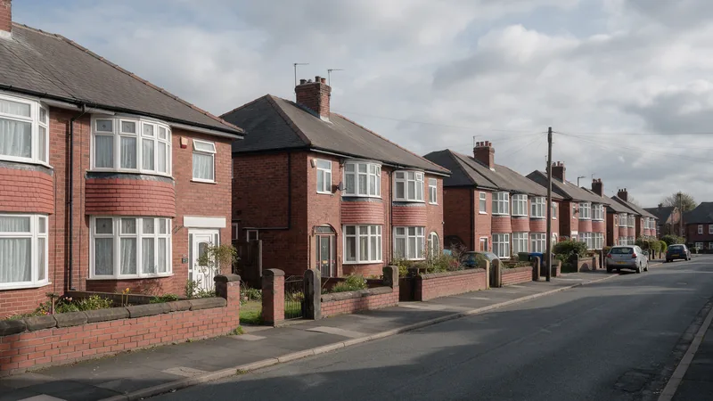

Sample coverage
Plastering in Hyde.
Skimming, replastering, rendering, ceiling repairs, coving and cornice, dry lining and plasterboard in Hyde and round about. Hyde is a real town. Skimwell Plastering is not a real firm, and this is sample coverage on a demo site.
What we get asked for in Hyde
Mostly the same two things as everywhere: a room skimming out before it gets decorated, and a ceiling that somebody has finally decided to deal with. What varies from town to town is the houses and what is on the walls. In Hyde it tends to be a mix of terraces and nineteen thirties semis, so one street wants lime and the next wants a straightforward skim over sound gypsum.
So a visit here starts the same way every time. Knuckles along every wall to find what is stuck and what has blown, a straight edge on the worst one, a look at what the background actually is, and a question about what is going on the wall afterwards. Paint in a pale colour with a window at one end is a different standard to wallpaper in a hallway, and it is better to know before.
Doing it room by room
Plenty of people round here do a room at a time, and there is nothing wrong with that. It spreads the cost and it means only one room is out of use. Two things to know if that is the plan. One, the hall, stairs and landing are usually the most disruptive part of a house and the one most worth doing in one go, because they cannot be shut behind a door. Two, if a room is going to be rewired, replumbed or have a radiator moved, that happens before the plastering rather than after, or you end up with patches in a wall you just paid to have flat.
Say at the visit what the order is likely to be and we will tell you honestly which rooms need doing properly and which ones only need a skim.
Getting to you
We are based in Tameside Sample and Hyde is on the list of towns we cover most. We are not going to print a response time, because that would be an invented figure on a demo site. Ring and you would get a straight answer about the week.

Generated photoGenerated for this demo. Not a photograph of Hyde.
In Hyde
What we would come out for.
Skimming walls and ceilings
A thin finish coat over plaster that is already sound, two passes, flat enough that the light across it shows nothing.
More →Full replastering
Old plaster off back to the brick, the background sorted, an undercoat ruled flat, then the finish. For walls a skim would only follow.
More →Rendering
Sand and cement in two coats, or a modern silicone thin coat that comes coloured through. The wall underneath decides which.
More →Ceiling repairs
A patch where a patch will hold, a new board and skim where the key has gone. After a leak, after artex, or after somebody else's.
More →Coving and cornice
Plain coving run and mitred so you cannot find the joints, or an ornate cornice matched and run back in by hand.
More →Dry lining and plasterboard
Board on studs, battens or dabs, taped and skimmed. New walls, cold walls and ceilings that want starting again.
More →Nearby
The other towns on the list.
- Ashton-under-LynePlastering in Ashton-under-Lyne
- StalybridgePlastering in Stalybridge
- DentonPlastering in Denton
- MossleyPlastering in Mossley
Sample coverage for this demo.
Walls want looking at in Hyde?
Tell us which rooms and your postcode and we will come and tap them. If a ceiling has come down, use the urgent line.